Northstar
Vision
Reimagining the shopper experience
A vision framework that unified 4 product pods and delivered measurable improvements to shopper satisfaction, engagement, and retention.
The other side of every order
Over 600,000 people work for Instacart as shoppers, serving the retail partners on Instacart's technology and our own marketplace app.
Batch acceptance
Shopping & picking items
Check out & staging
Order delivery
Shoppers needed a more cohesive, human app experience
- Give shoppers confidence at every step of the job
- Surface meaningful, actionable performance data
- Celebrate milestones to drive long-term retention
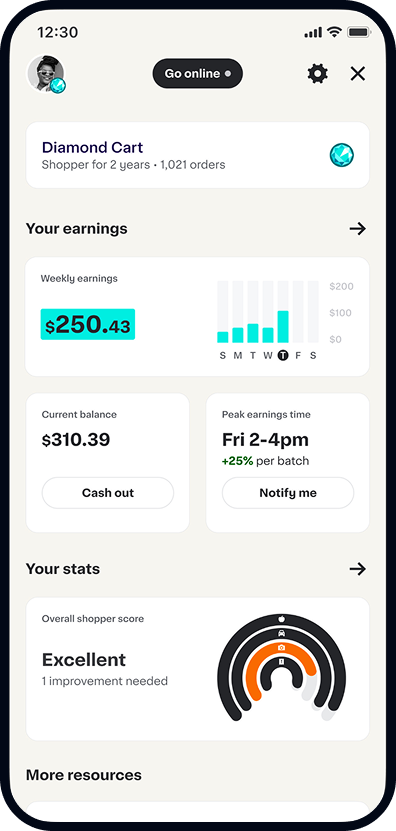
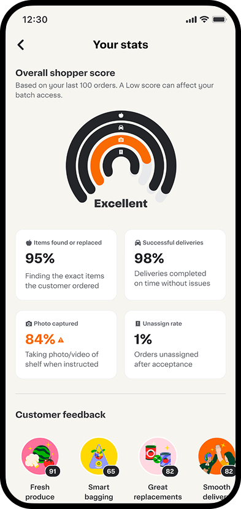
Three pain points stalling shopper satisfaction
Fragmented app
Multiple disconnected surfaces forced shoppers to context-switch constantly, increasing cognitive overhead on every batch.
High cognitive load
Overwhelming information density with no clear hierarchy. Shoppers — especially new ones — felt lost and made more errors.
No guidance for complex tasks
Shoppers faced complex scenarios — substitutions, multi-store batches, customer issues — with no in-app guidance or support.
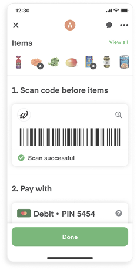
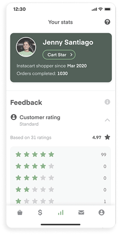
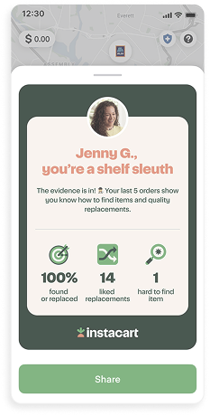
What shoppers told us
Qualitative sessions, diary studies, and data analysis across thousands of active shoppers.
Shoppers frustrated with finding items and navigating stores
Desire for fair recognition and actionable feedback
Highest churn risk among top-tier "Diamond" shoppers
Three design principles that guided every decision


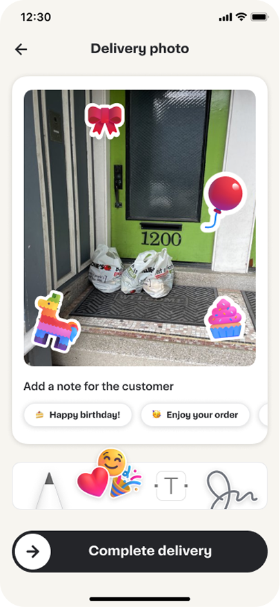
Human touch
Celebrate effort, acknowledge difficulty, and build genuine connection into every interaction.
Guidance
Surface the right information at the right moment with clear, contextual cues.
System cohesion
Three pods, one experience. Shared design language, patterns, and decisions.
Two pillars that drive the redesign
Shopper confidence & efficiency
- Contextual toasts for difficult scenarios
- Step-by-step substitution guidance
- Proactive alerts for store-specific issues
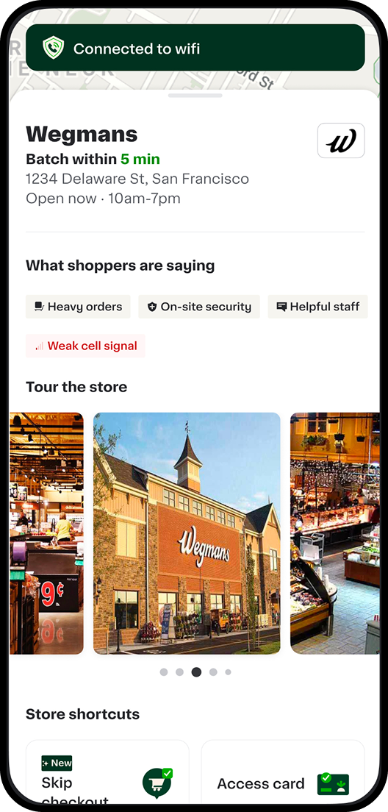
Higher shopper motivation
- Shopping anniversary celebrations
- Earnings dashboard with trend insights
- Objective, outcome-based performance reviews
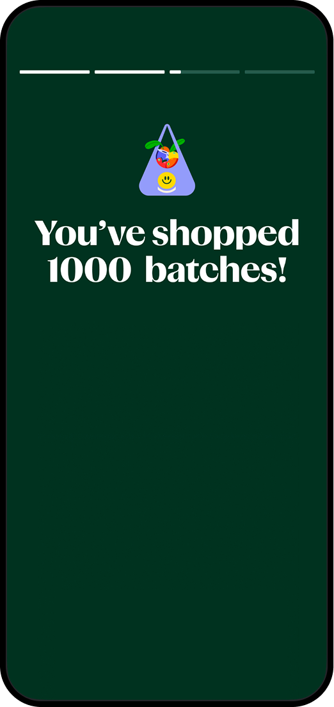
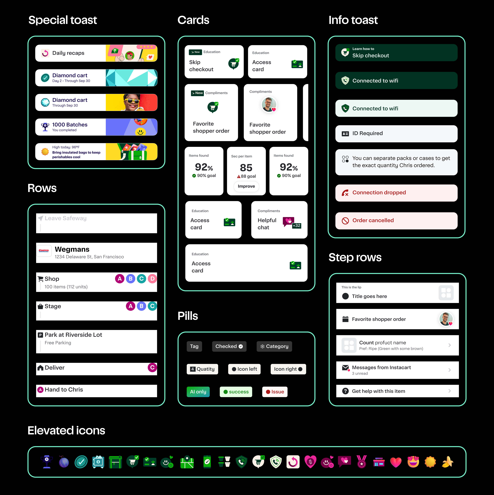
Unified 4 pods' work into a single cohesive system
- Eliminated duplicate components across pods
- Established shared color, type & spacing tokens
- Documented patterns for common shopper flows
- Faster cross-pod iteration
- Consistent experience across all surfaces
- Reduced design-dev rework
Three features shipped in the first sprint
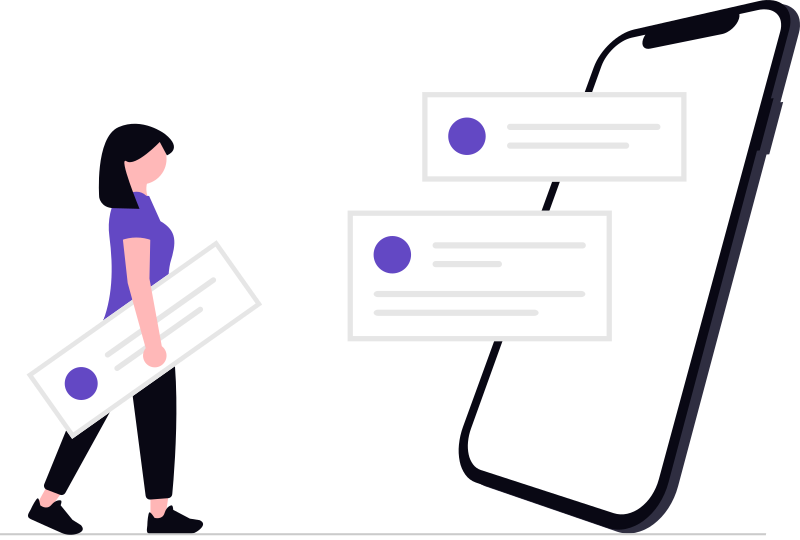
Contextual guidance, live in app
Meaningful stats, surfaced clearly
Yearly milestone feature
Onboarding
Awkward pop-ups
Generic pop-ups displaying in untimely moments — interrupting workflows, missed by shoppers, adding friction instead of value.
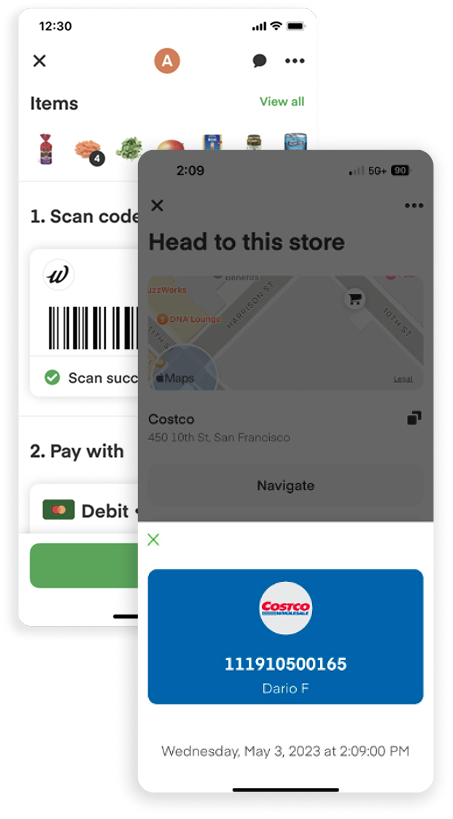
Timely lock-screen cards
Live Notifications surfaced on the lock screen based on geolocation — appearing at exactly the right moment, before the shopper even opens the app.
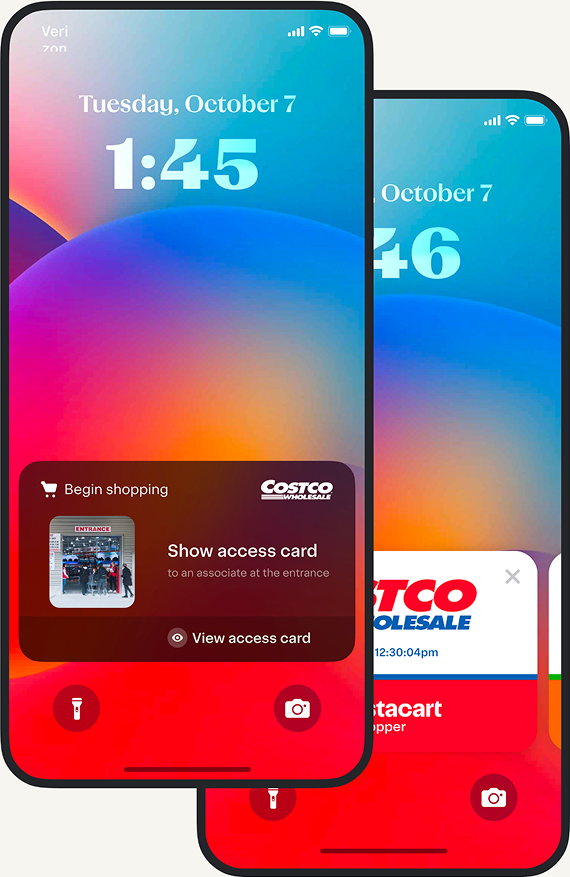
Metrics
Generic celebratory toasts
Static, one-size-fits-all congratulations with no data or context. Shoppers couldn't understand what drove their earnings or how to improve.
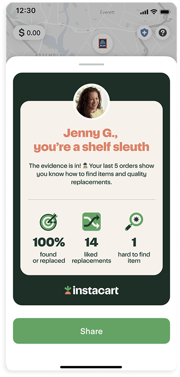
Dashboards tied to earnings
A dynamic dashboard showing trends, streaks, and earnings breakdowns. Shoppers can now understand their performance and take action to improve it.
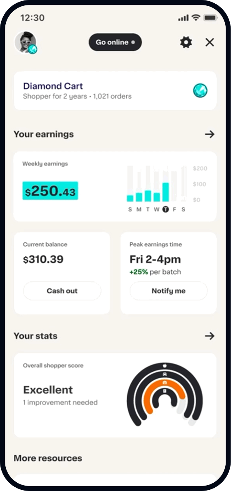
Feedback
Subjective star ratings
A single 1–5 star rating per order, highly susceptible to customer bias. No context, no explanation — shoppers couldn't appeal or learn from feedback.
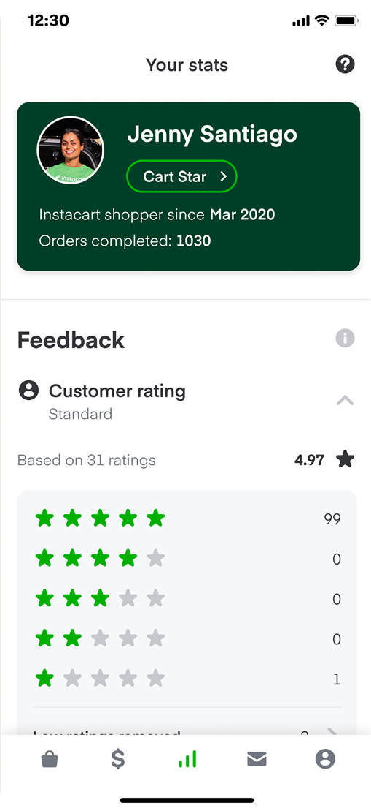
Objective, outcome-based metrics
Performance based on actual outcomes: on-time deliveries, substitution quality, item found rates. Fair, transparent, and actionable for every shopper.
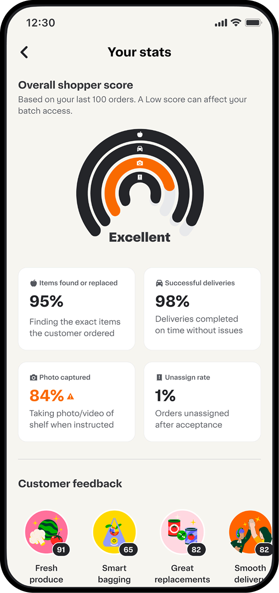
Measurable gains across satisfaction, earnings, and retention
Shopper satisfaction measured via post-batch surveys across 100K+ active shoppers
Shoppers accepting more batches after dashboard and guidance improvements
Reduced churn among top-tier shoppers — most impactful cohort for platform health
Three lessons that changed how we work
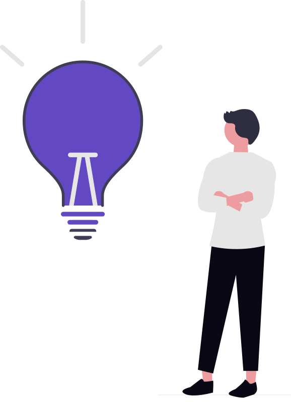
Align early across pods and leadership
Design with content & research from day one
Balance usability and accuracy to earn trust
Defining a vision isn't just about new UI
It's about reducing cognitive load, adding delight, and aligning the team around real shopper needs.
The Northstar gave 4 pods a shared direction — translating into shipped features, measurable outcomes, and a foundation for everything the Shopper App becomes next.
Questions
dariofidanza.com